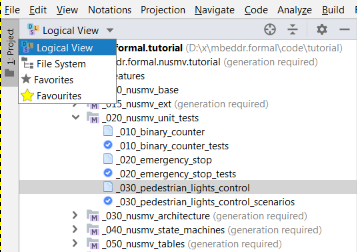

The Project View tool window gives you a hierarchical view of your project's structure. You can choose from several visualizations. The Logical view organizes your code into modules, models and root nodes, while the File System view gives you the folders and files that your project consists of.
